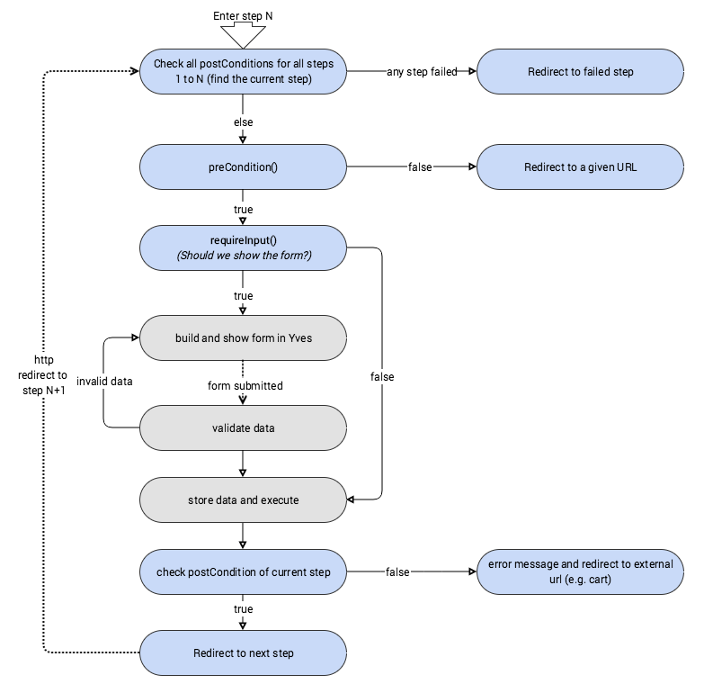

Checkout Form Submission
On form submission, the same processing starts with the difference that if form submit is detected then the validation is called:
- if the form is invalid then view will be rendered with validation errors
- if form data is valid, then execute() is called on step that executes the step related logic.
E.g.: add address to QuoteTransfer or get payment details from Zed, call external service etc.
It’s up to you to decide what to do in each execute method. It’s important that after execute() runs, the updated returned QuoteTransfer should satisfy the postCondition() so that the StepProcess can take another step from the stack.
Required Input
Normally each step requires an input from the customer. But there are cases when there is no need to render a form or a view but some processing is still required (e.g. PlaceOrderStep, EntryStep). Each step should provide the implementation of the requireInput() method. StepProcess will call this method and react accordingly. Again if requireInput() is false, then after running execute() the postConditions should be satisfied.
Precondition and Escape Route
Preconditions are called before each step; this is a check to indicate that step can’t normally be processed.
E.g.: the cart is empty. If the preCondition() return false, then customer is redirected to the escapeRoute provided when configuring the step.
External Redirect URL
Sometimes it’s needed to redirect the customer to an external URL (outside application). The step should implement StepWithExternalRedirectInterface::getExternalRedirectUrl() which returns the URL to redirect customer after execute() is ran.
Each step must implement StepInterface.
